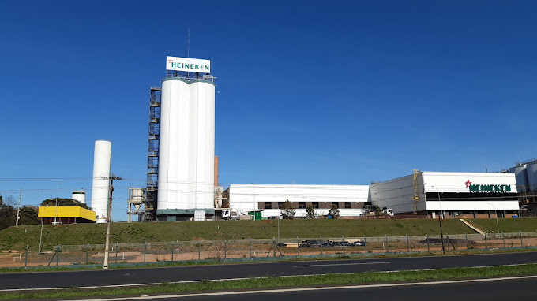

A unidade da Heineken em Ponta Grossa, inaugurada em 2019, foi parte de um investimento significativo da empresa para fortalecer sua presença no Brasil. A fábrica foi projetada para ser uma das mais modernas do país, incorporando tecnologias sustentáveis e eficientes.
A escolha de Ponta Grossa foi estratégica devido à sua localização, que facilita a distribuição para diversas regiões do Brasil. A unidade tem capacidade para produzir milhões de litros de cerveja por ano e abriga várias marcas do portfólio da Heineken.
Além da produção, a fábrica também se destaca por iniciativas de sustentabilidade, como a utilização de energia renovável e a implementação de processos para redução de desperdício. A Heineken se comprometeu a ter uma operação cada vez mais sustentável, refletindo tendências globais e a crescente demanda por responsabilidade ambiental na indústria.
Em 2024, a unidade da Heineken em Ponta Grossa continua a ser uma peça chave na estratégia da empresa no Brasil. A fábrica tem se destacado não apenas pela produção em larga escala, mas também pela adoção de práticas sustentáveis e inovações tecnológicas.
A Heineken tem ampliado seu portfólio de produtos e investido em novos lançamentos, atendendo à demanda crescente por variedades de cervejas. Além disso, a unidade tem se concentrado em aumentar a eficiência energética e reduzir a pegada de carbono, alinhando-se com as metas globais de sustentabilidade da empresa.
A fábrica também pode ter ampliado suas parcerias com fornecedores locais, promovendo a economia regional e fortalecendo sua responsabilidade social. A interação com a comunidade e projetos voltados para a educação e preservação ambiental têm sido uma prioridade.